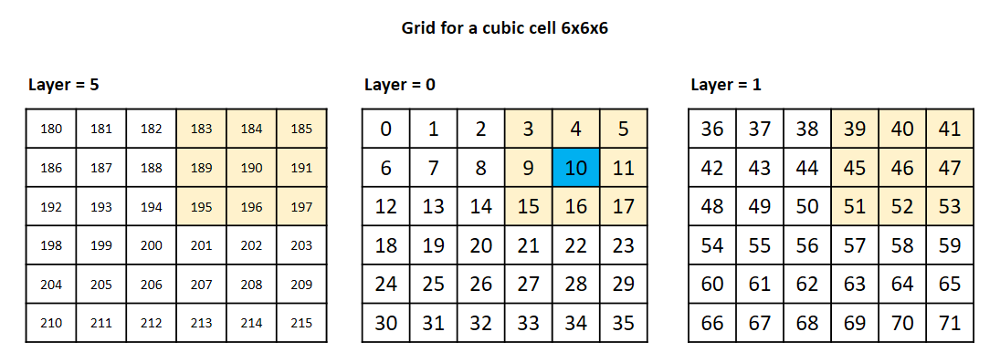

Cubic Box¶
Overview¶
A generalization of the class Box for cubic boxes.
The dimensions of a cubic box must be equal ( \(L_x=L_y=L_z\)), thus the user has to be
consistent when the object be created.
Example¶
import chiripa as chi
# Creating a simple CubicBox of lenth 10 angstroms
box=chi.CubicBox(10, units="real")
box=chi.CubicBox(10)
# Creating a simple CubicBox of lenth 10 sigma (in reduced units)
box=chi.CubicBox(10, units="reduced")
# Raising an exception
box2 = chi.CubicBox(20., 20., 20., xlow=5., ylow=5., zlow=10)
# Lx = 15, Ly = 15, Lz = 10
# Creating a box and the subcells for linked link method
chi.init_logger("Output", fileoutput="out/test_box.log", append=False, inscreen=False)
box_simple = chi.CubicBox(10, 10, 10)
box_simple.linked_cell(1.0, 0.5, logger=log)
Attributes¶
units(string) : Allowed values are “real” or “reduced”. Indicate the class of units to be used in the box definition.
nameunits(string) : For “real” –> “angstroms”. For “reduced” –> “sigma”.
a(ndarray(3)): Unit cell vector a
b(ndarray(3)): Unit cell vector b
c(ndarray(3)): Unit cell vector c
alpha(float): Axial angle \(\alpha\)
beta(float): Axial angle \(\beta\)
gamma(float): Axial angle \(\gamma\)
xlo(float): X coordinates of the box origin in distance units
ylo(float): Y coordinates of the box origin in distance units
zlo(float): Z coordinates of the box origin in distance units
xhi(float): X coordinates of the box origin in distance units
yhi(float): Y coordinates of the box origin in distance units
zhi(float): Z coordinates of the box origin in distance units
Lx(float): Length of the edge in the X-direction \(x_{hi}-x_{lo}\)
Ly(float): Length of the edge in the Y-direction \(y_{hi}-y_{lo}\)
Lz(float): Length of the edge in the Z-direction \(z_{hi}-z_{lo}\)
typebox(string): “cubic”.Only “cubic” is implemented in this version
isorthonormal(boolean): Simulation box orthogonal or not. Always True for CubicBox
cellGrid(ndarray[3]): Number of subcells for each dimension, [nx, ny, nz]
nearby(ndarray[27,nx*ny*nz]): Neigbours array
Methods¶
Setups the neighbours array (self.nearby) with periodic boundary conditions (PBC) |
|
Calculate the geometrical center ot the simulation box |
|
This method initializes the linked cell grid for the cubic box. |
API¶
-
class
chiripa.CubicBox.CubicBox(xhigh, yhigh, zhigh, xlow=0.0, ylow=0.0, zlow=0.0, units='real')[source]¶ Bases:
chiripa.Box.BoxCubic Box class
-
__init__(xhigh, yhigh, zhigh, xlow=0.0, ylow=0.0, zlow=0.0, units='real')[source]¶ Builds a cubic box
The simulation box has its origin at (xlo, ylo, zlo) point. The lattice vectors are defined as:
- Orthogonal cubic box:
a =(xhi-xlo,0,0)
b =(0, yhi-ylo,0)
c =(0, 0,zhi-zlo)
Lx=Ly=Lz
alpha=beta=gamma=90
- Parameters
xhigh – (type float) –> X Coordinate of the maximum vertex in distance units.
yhigh – (type float) –> Y Coordinate of the maximum vertex in distance units.
zhigh – (type float) –> Z Coordinate of the maximum vertex in distance units.
xlow – (type float, default=0.0) –> X Coordinate of the box origin in distance units
ylow – (type float, default=0.0) –> Y Coordinate of the box origin in distance units
zlow – (type float, default=0.0) –> Z Coordinate of the box origin in distance units
units – (type string, default=”real”) –> real or reduced units
-
_define_regions()[source]¶ Setups the neighbours array (self.nearby) with periodic boundary conditions (PBC)
The grid of cells starts in 0 and finnish in (self.cellGrid[0]*self.cellGrid[1]*self.cellGrid[2])-1
Example
self.nearby[:,10] = All neighbors of the cell number 10

-
center_of_box()[source]¶ Calculate the geometrical center ot the simulation box
- Returns
An (1,3)-array with the coordinates of the geometric center
-
linked_cell(max_rc, skin, logger=None)[source]¶ This method initializes the linked cell grid for the cubic box.
The simulation domain is divided into subcells with an edge length (rc+skin) greater than or equal to the maximum cut-off radius (max_rc) of the interaction to be computed.
It changes the value of self.cellGrid attribute.
- Parameters
rc – (float) –> maximum cut-off radius.
skin – (float) –> extra distance to create the subcells
logger – (logger) –> A logger object to write
-
{kind=link}
{kind=link}
{kind=link}